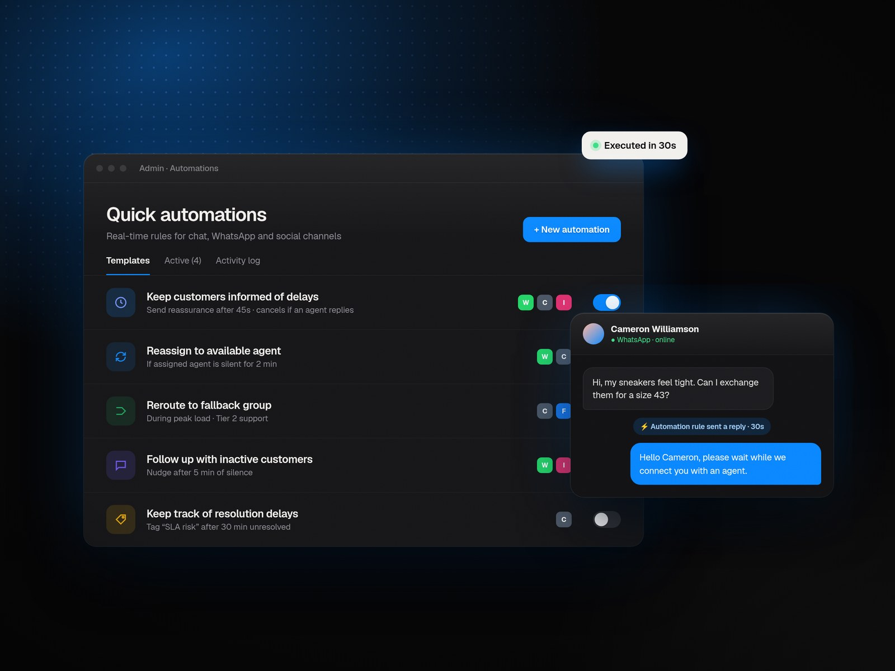
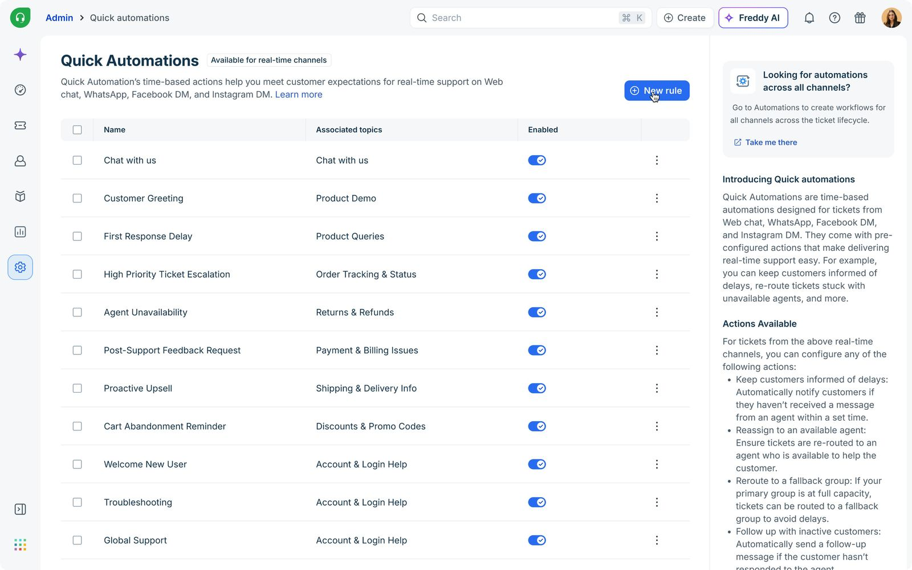
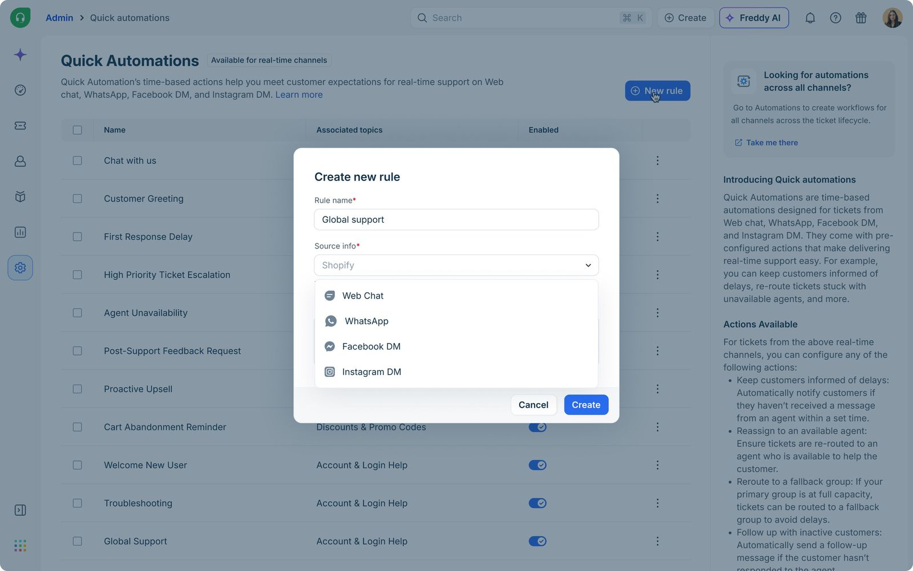
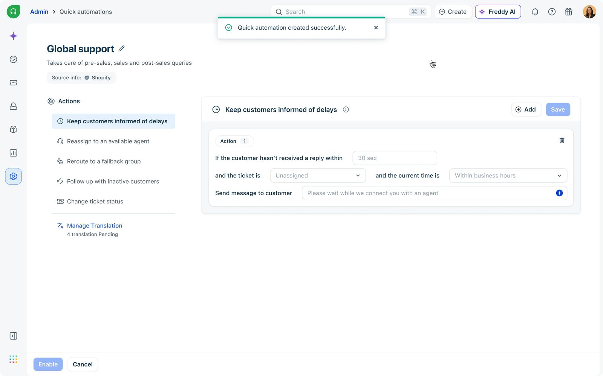
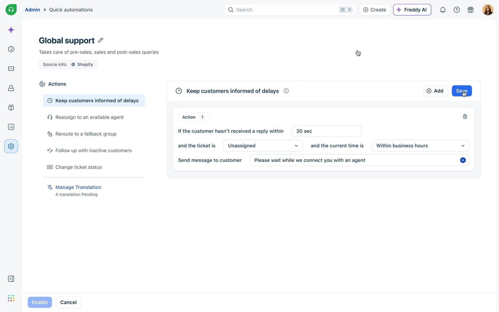
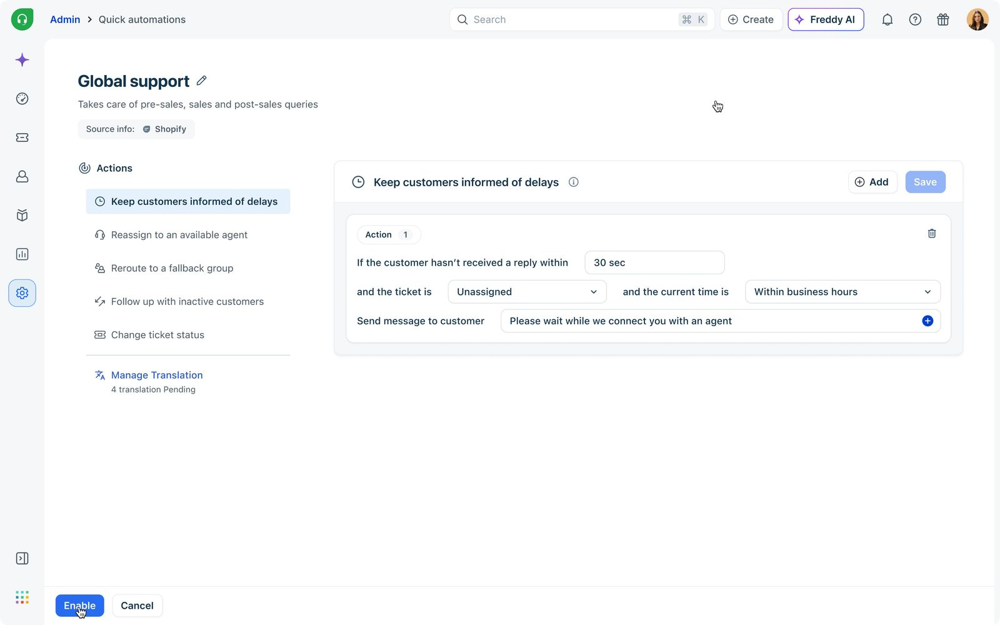
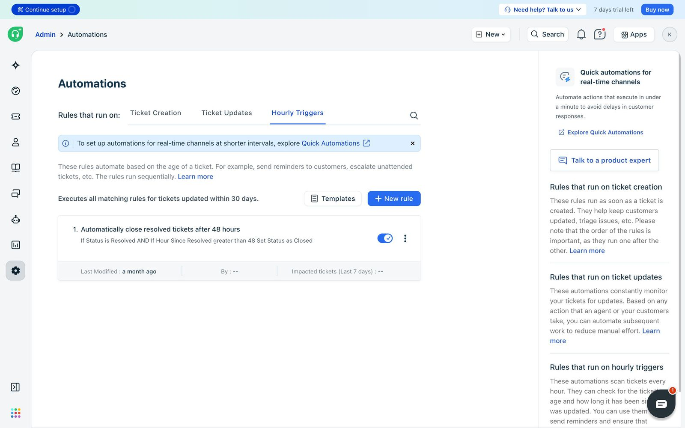
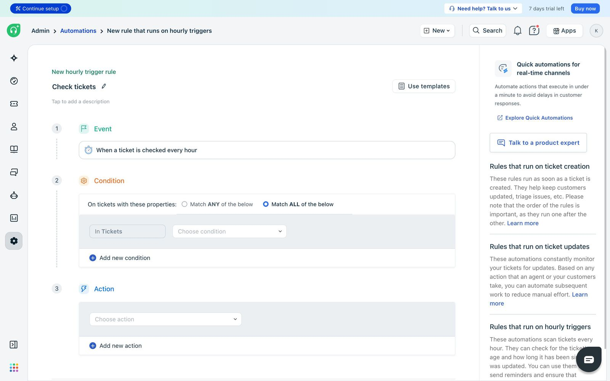
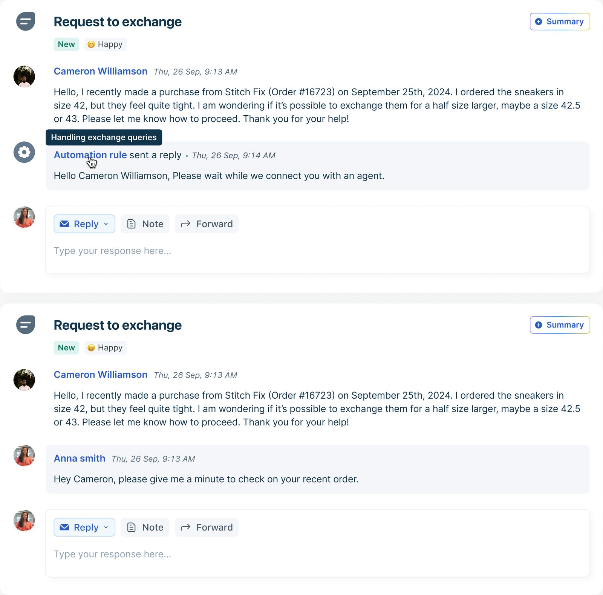

Quick Automations
An instant automation framework built for conversational support inside Freshdesk, executing workflows in as little as 30 seconds across WhatsApp, Web Chat, Facebook DM and Instagram DM.






My role
I led the end-to-end design for Quick Automations, a real-time automation framework built specifically for conversational support workflows inside Freshdesk Omni.
From defining the information architecture to simplifying highly technical automation logic into approachable templates, I worked closely with Product, Engineering, CX and GTM teams to shape a scalable experience that could support omni-channel workflows without overwhelming admins.
The project eventually became a foundational step toward Freshdesk's long-term workflow modernization vision.
Built for email.
Strained by chat.
Freshdesk's legacy automation framework was originally designed for email-first support workflows. The system relied heavily on Hourly Triggers: tickets were evaluated periodically instead of instantly. While this worked for email, it became a major operational limitation for conversational channels where customers expect responses in seconds.
- 01Instant acknowledgements
- 02Delay-based customer reassurance
- 03Smart fallback routing
- 04Real-time follow-ups
- 05Faster SLA-driven workflows
- 06Multi-channel orchestration
Meanwhile competitors like Zendesk and Intercom already supported second-level conversational automation, making real-time execution a market expectation rather than a premium capability.
Three questions,
one north star.
- How might we help support teams automate real-time conversations without complex setup?
- How might we execute automation rules within seconds instead of hours?
- How might we simplify conversational automation for SMB admins while supporting omni-channel scale?
The legacy automation surface, built for asynchronous email workflows.


Why the existing system kept falling short.
Before designing Quick Automations, I needed to understand why Freshdesk's existing framework struggled with conversational workflows. The findings validated the need for a dedicated real-time layer and revealed how dramatically customer expectations had shifted.
Email-first automation architecture
Freshdesk's legacy system was built around asynchronous workflows. Tickets were evaluated periodically via Hourly Triggers: reliable for email, but unfit for channels demanding instant responsiveness.
Real-time expectations had changed
Research with 18 CX operations leads revealed 94% of teams expected automation-driven acknowledgements within 30–90 seconds for chat-based channels. Delays directly impacted CSAT and SLA.
Delay & cancel logic became critical
Conversational support required automations to dynamically stop if an agent responded before the threshold. Existing systems lacked this, creating duplicate or irrelevant replies after agents had already engaged.
Workflow builders were too complex
Template-based setup averaged 2.3 minutes vs 8.7 for builders. Configuration errors dropped from 2.4 to 0.2 per setup, strongly validating a template-first experience.
Speed mattered more than flexibility
Teams consistently prioritized faster setup, faster execution and faster acknowledgement over highly customizable but operationally complex workflow systems.
Key takeaways
- 01Real-time channels require second-level automation responsiveness
- 02Traditional automation models fail for conversational workflows
- 03Delay-and-cancel execution is critical for chat-based support
- 04Users preferred guided templates over complex workflow builders
- 05Conversational automation required a fundamentally different execution architecture
Admins didn't want
to build workflows.
Through stakeholder interviews, workflow analysis and operational mapping, one insight kept surfacing: conversational support teams behaved very differently from email-first teams. They needed instant fallback workflows, automated reassurance, fast setup, and a single place to manage multi-channel automations.
Admins didn't want to build workflows. They wanted the system to intelligently handle operational gaps automatically.
While email automations were treated as long-term process configurations, conversational automations were expected to be configured and deployed within minutes, often during active support shifts. This heavily influenced the decision to prioritize guided templates over fully customizable workflow builders.
Research objectives
- Understand operational gaps in conversational support workflows
- Identify limitations in the existing automation system
- Understand execution speed expectations for real-time channels
- Reduce setup complexity for SMB admins
- Explore scalable patterns for future workflow unification
Key findings
- Customers expected automation execution within seconds, not minutes
- Most urgent use cases revolved around delayed responses and fallback routing
- Existing automation systems felt too technical for SMB admins
- Template-based setup significantly reduced onboarding friction
- Real-time automation created immediate operational value
- Multi-channel conversational support increased automation relevance significantly
Six high-frequency operational gaps. Six templates.
To simplify setup for SMB and mid-market admins, I designed Quick Automations around guided templates instead of requiring users to configure workflows from scratch. Each template focused on a high-frequency operational gap observed during research.
Keep customers informed of delays
Sends reassurance messages when agents take longer than expected. Uses delay-and-cancel logic so messages auto-cancel if an agent replies first.
Reassign to available agent
Unassigns and reroutes conversations when the assigned agent fails to respond within a set duration, preventing chats from getting stuck.
Reroute to fallback group
Moves conversations to backup support groups during peak load, helping teams maintain SLA commitments through traffic spikes.
Follow up with inactive customers
Sends nudges when customers stop responding mid-conversation, reviving stalled chats without manual effort.
Reduce load for agents
Automatically changes ticket status when customers remain inactive, clearing queues and freeing agents for fresh conversations.
Keep track of resolution delays
Automatically tags tickets that remain unresolved beyond a set time, surfacing SLA risks and queue delays so teams can intervene before resolution times slip. Admins set a wait threshold, then assign or remove tags like SLA risk or waiting_in_queue.
A strategic bridge to real-time.
I analyzed conversational automation across Zendesk, Zoho, Salesforce and Intercom. While each offered powerful systems, all relied on block-based builders requiring extensive setup. Freshdesk had no modern builder yet, and its Hourly Triggers couldn't meet 30-second SLAs.
Quick Automations became a strategic bridge between legacy email-first automations and future real-time workflow orchestration.
Key market insights
Workflow builders prioritized flexibility over speed
Most competitors optimized for highly customizable systems, but configuring even simple conversational workflows required multiple setup steps and technical understanding.
Conversational support was rapidly becoming the norm
Volume across WhatsApp, social DMs, web chat and omni-channel systems was growing significantly faster than email, increasing the need for real-time operational tooling.
SMB teams needed simpler automation experiences
Existing workflow systems were too complex for smaller support teams. A clear opportunity existed to simplify setup through guided operational templates.
Legacy automation was built for asynchronous support
Traditional architectures evaluated tickets periodically rather than instantly, poorly optimized for conversational support where execution speed directly impacts CX.
Our edge
- Instant rule execution in as little as 30 seconds
- Template-first conversational automation
- Real-time delay-and-cancel workflows
- Multi-channel support orchestration
- Simplified setup for SMB admins
Instead of overwhelming users with fully customizable workflow builders, we optimized for speed, usability, operational clarity and faster time-to-value.
Mapping value against effort.
We mapped each automation opportunity using an Impact / Effort matrix to identify workflows that created the highest operational value with minimal setup friction for support teams.
The exercise helped us prioritize features that could immediately improve conversational support responsiveness while flagging larger infrastructure investments for the next phase of the workflow platform.
- Instant acknowledgement replies
- Follow up with inactive customers
- Template based automation
- Delay-and-cancel logic
- Multi-channel auto-replies
- Template customization
- Fully customizable workflow builder
Findings
- 01Simple conversational automations created the fastest operational impact. They solved immediate support-team pain points without heavy configuration.
- 02High-frequency workflows like acknowledgement replies and inactive customer follow-ups delivered significantly higher perceived value than advanced workflow customization.
- 03Larger investments like the real-time execution engine and delay/cancel architecture were foundational in enabling future workflow scalability across omni-channel support.
What we built.
Instant Automation Engine
A lightweight framework executing workflows in as little as 30 seconds. Architecturally separated from legacy Hourly Triggers to deliver second-level reliability.
Multi-channel quick automations
Configure conversational automations once across WhatsApp, Facebook DM, Instagram DM and Web Chat, collapsing setup effort for omni-channel teams.
Template-based setup
Guided templates for delays, reassignment, fallback routing, follow-ups and load reduction. Onboarding measured in minutes, not afternoons.
Delay & cancel logic
Automations halt the moment an agent responds, eliminating duplicate messages and conversational noise.

The numbers.
of real-time channel customers configured Quick Automations
coverage of eligible conversational workflows across channels
reduction in dropped conversations via instant acknowledgements
in feature-attributed MRR across 99 paid accounts
Beyond the metrics, Quick Automations established the foundation for Freshdesk's future unified “Workflows” platform, combining both real-time and asynchronous automation systems within one orchestration layer.
A product is never finished.
Quick Automations was designed as the first step toward a broader workflow modernization initiative. The long-term vision unifies legacy Automations and Quick Automations under a single Workflows platform, capable of handling both asynchronous and real-time support automation within one scalable orchestration system.
The next phase focuses on richer automation actions, smarter execution, expanded orchestration and eventually a modern block-based builder, while preserving the simplicity and speed that made Quick Automations effective for conversational support.